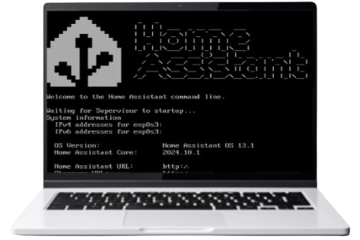

01

Home Assistant Platform
Software engineering group project developed during my exchange at San Diego State University. A smart-home assistant integrating IoT device control with a unified interface.
- Python
- IoT
- Agile
- Team of 5